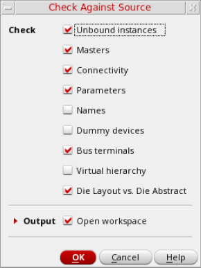

Checking and Fixing IO Pad Locations
Components of the die layouts and die packages that are not edited in Edit-in-Concert mode might not be synchronized with each other. Use the Module – Layout Vs Abstract submenu to run the following LVA commands to check for and fix mismatches between a die package and its constituent die layouts:
The Check IO Pad Locations, Fix IO Pad Locations (and Options) commands for IC fabrics is only available in Edit-in-Concert mode.
You can run these commands on all or selected die instances or IO pads.
The Check IO Pad locations, Fix IO Pad locations, and Edit-in-Concert commands do not run on instances that are bound to a layout with shape-based IO pads. A warning message is displayed listing all the instances that have been ignored.
Alternatively, you can use the Connectivity – Check – Against Source (CAS) command to check the differences between the schematic and the layout. The Check Against Source form includes the Die Layout vs. Die Abstract check box that lets you check for mismatches between a die package and its constituent die layouts. Violations are listed on the CAS tab of the Annotation Browser.

Related Topics
Modify in Edit-in-Concert Mode
IO Pad Connectivity Mismatch Fixes
Return to top